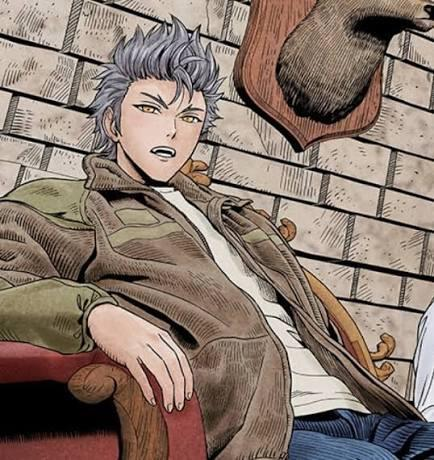

História
Meu nome é Wolf, e antes que você pergunte: sim, eu sei que pareço bravo… e forte demais… e um pouco assustador. A culpa não é minha, ok? Eu nasci assim. Sou meio humano, meio ogro, então força bruta e impulsividade fazem parte do pacote. Mas não se engane — eu não sou só músculos e cara fechada.
Eu não sou muito bom com palavras, mas vou tentar explicar. Eu cresci sem saber direito onde eu me encaixava. Forte demais pra conviver com humanos normalmente, e “delicado demais” pros ogros me levarem a sério. É meio complicado… Mas quando conheci a Nico, o Morihito e o resto do pessoal, finalmente senti que tinha encontrado um lugar onde eu podia ser eu mesmo. Mesmo quando eu faço besteira — o que, tá bom, não é raro — eles continuam do meu lado.
Eu sei que às vezes ajo primeiro e penso depois… enfim, quase nunca penso antes. Mas eu realmente quero proteger as pessoas importantes pra mim. Se alguém mexer com meus amigos, já era. Já tô na frente antes mesmo de perceber.
As pessoas olham pra mim e veem um cara explosivo, barulhento e forte. Mas, olha… eu também tenho meu lado sensível. Não conta pra ninguém, sério! Eu fico sem jeito quando me elogiam, fico furioso quando me subestimam e fico completamente perdido quando tentam fazer graça comigo. Não é fácil ser eu.
Mas se tem uma coisa que eu aprendi, é que não importa de onde você veio ou o que você é — o que importa é quem você escolhe proteger, e quem escolhe ficar do seu lado.
E eu escolhi. E eles escolheram ficar comigo.
Mesmo eu sendo… bom, eu.
